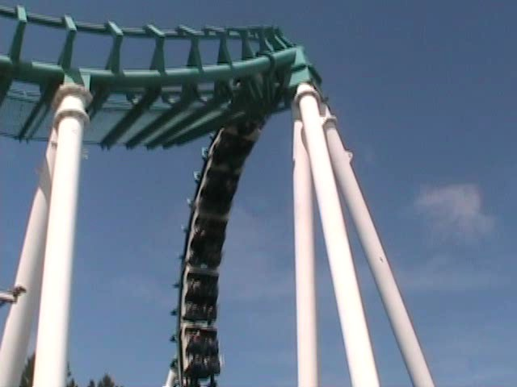
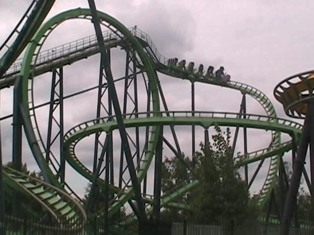
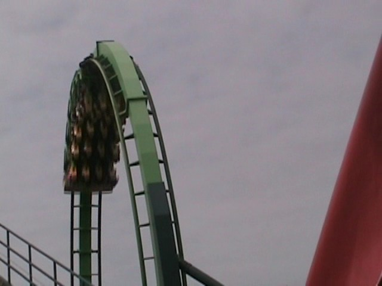
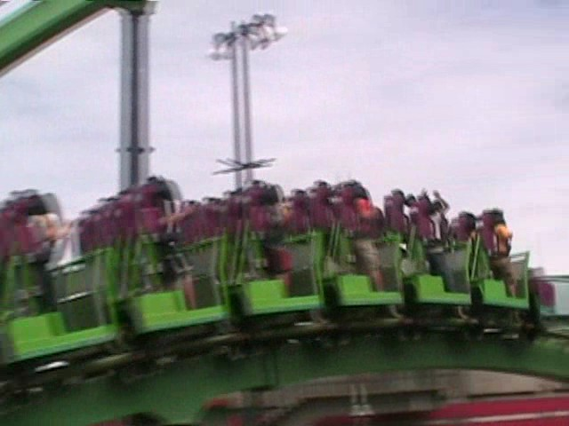
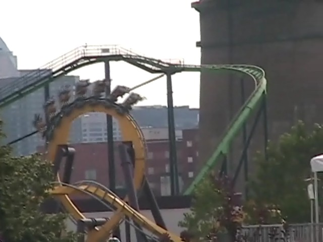
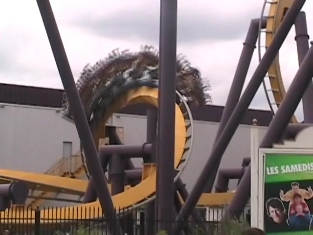
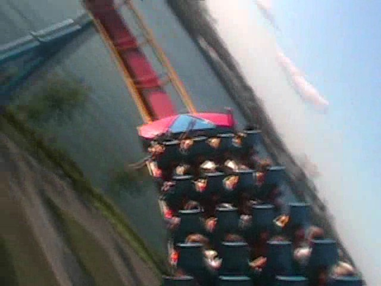
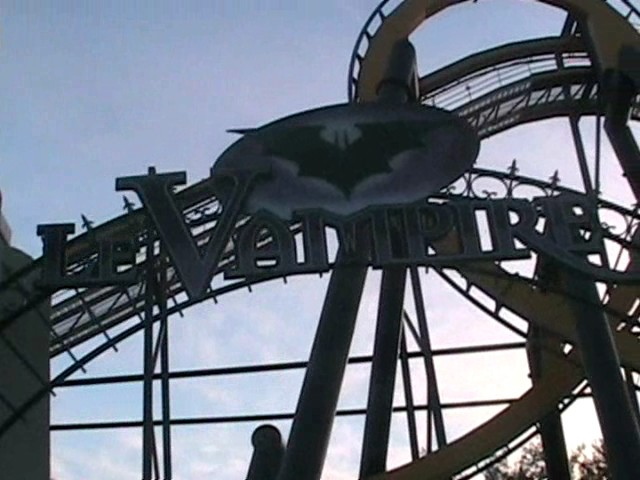
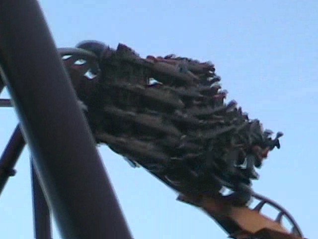

North of the Border Tour
Great Escape La Ronde Canadas Wonderland Michigans Adventure Six Flags Great America Kings Island Kennywood Knoebels Dorney Park
Well, we made it past the border and are now in the beautiful city of Montreal.
But who cares about that when there's an amusement park nearby.
 My first park out of the U.S
My first park out of the U.S
Up first is the lovely Goliath.
 Since helixes of death are illegal in Canada, they had to completely redo Goliath's Layout to make it Canadian approved.
Since helixes of death are illegal in Canada, they had to completely redo Goliath's Layout to make it Canadian approved.
Canadian Goliath > Californian Goliath
 After Goliath, we decided to go on a lower quality ride.
After Goliath, we decided to go on a lower quality ride.
In French Canada, all Boomerangs are required to be sponsered by Chocolate Milk.

Our ride on the Chocolate Milk Boomerang was quite good.
 Here's a tip for those planning on going to La Ronde. Unless you've never been on a Vekoma Corkscrew, SKIP THIS RIDE!!! The operations are so horrible it's not funny! What should've been a 10 minute wait turned out to be a 90 minute wait!
Here's a tip for those planning on going to La Ronde. Unless you've never been on a Vekoma Corkscrew, SKIP THIS RIDE!!! The operations are so horrible it's not funny! What should've been a 10 minute wait turned out to be a 90 minute wait!
 As far as the actual ride, it was semi decent and not too rough.
As far as the actual ride, it was semi decent and not too rough.
Damn you Vekoma! Why did you have to make rides at stupid French Canadian Parks that will give the ride horrible operations!!!
When I was at the fair with Andrew last week, he said that he'll be taking a vacation to Montreal and will visit La Ronde. I wonder why?
 Up next was Cobra. The old Stand Up Coaster,
Up next was Cobra. The old Stand Up Coaster,

Suprisingly, Cobra was great! It had everything you would want!

It had a Vertical Loop,...
 Lots of twisty bits,...
Lots of twisty bits,...

And ejector air! (And no, it does NOT hurt your balls in anyway.)
Another thing we learned is that in Canada, Gum Supports are smiled at while they are frowned at in America.

We were going to go on Vampire next...

But the line was over 2 hours. So we decided we would come back to Vampire at the end of the day. (Or at least we thought we would.)
 So instead we decided to go ride the Big Crappy Woodie.
So instead we decided to go ride the Big Crappy Woodie.
 One thing we lucked out on is that we were one of the lucky few that were able to coaster race on Monstre. You French Canadians got your asses kicked!
One thing we lucked out on is that we were one of the lucky few that were able to coaster race on Monstre. You French Canadians got your asses kicked!
This place is so awsome that they have candy machines IN THE BATHROOMS!!! Finally! I can eat my nerds while taking a crap!
 We decided to take another ride on Goliath because it's awsome.
We decided to take another ride on Goliath because it's awsome.
 Those Canadians are just enjoying their Canadian ride on Canadian Goliath in Canada.
Those Canadians are just enjoying their Canadian ride on Canadian Goliath in Canada.

While it's no Maverick, it'a at least a fun ride in Canada.

Earlier in the day, we decided to ride Vampire at the end of the day.
 However, they closed Vampires line because it was too close to the park's closing time. (IT WAS FREAKING 7:30 and the park closed at 10:00!!!!)
However, they closed Vampires line because it was too close to the park's closing time. (IT WAS FREAKING 7:30 and the park closed at 10:00!!!!)

Stupid Canadian Batman! You just HAD to be at this Canadian Park. Why couldn't you have been at Canadas Wonderland!!?
 If we're lucky, the Wild Mouse might be open.
If we're lucky, the Wild Mouse might be open.
Nope. We're sorry. The Wild Mouse is just too fun to be open this late at night.
 After wandering the park for 15 minutes, we realized that the ONLY ride open in La Ronde was the Kiddy Coaster.
After wandering the park for 15 minutes, we realized that the ONLY ride open in La Ronde was the Kiddy Coaster.
It's not that I'm a credit whore, it's just that this is the ONLY THING OPEN IN THE ENTIRE F**KING PARK!!!!!!!
Canadas Wonderland
Home